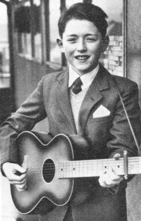
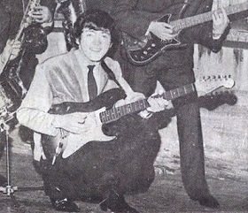
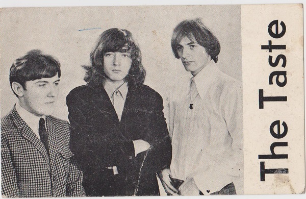
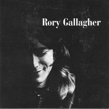
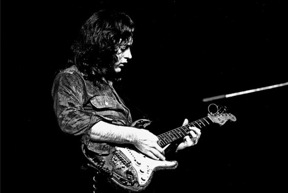
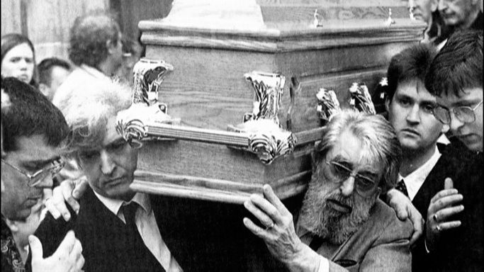

Rory Gallagher (2 March 1948–14 June 1995)
Rory Gallagher was an Irish blues-rock multi-instrumentalist, songwriter, and bandleader known for his charismatic performances and dedication to his craft.
This site attempts to give a brief introduction to Rory and his work. For those wishing to delve deeper, the Further Reading section is recommended.
Early Years
Rory was born in Ballyshannon, County Donegal in 1948. The family moved, first to Derry City, where his younger brother Dónal was born in 1949. His mother, Monica, and the two boys then moved to Cork, where the brothers were raised. Rory attended North Monastery School. His father Daniel had played the accordion and sang with the Tír Chonaill Céilí Band whilst in Donegal; his mother Monica was a singer and acted with the Abbey Players in Ballyshannon.
 At age nine, Gallagher received his first guitar. He built on his burgeoning ability on ukulele in teaching himself to play the guitar and perform at minor functions. After winning a talent contest when he was twelve, Gallagher began performing in his adolescence with both his acoustic guitar, and an electric guitar he bought with his prize money.
However, it was his purchase three years later of a 1961 Fender Stratocaster for £100 that became his primary instrument and most associated with him for the span of his lifetime.
Gallagher was initially attracted to skiffle after hearing Lonnie Donegan on the radio. Donegan frequently covered blues and folk performers from the United States. He relied entirely on radio programs and television. Occasionally, the BBC would play some blues numbers, and he slowly found some song books for guitar, where he found the names of the actual composers of blues pieces. While still in school, playing songs by Buddy Holly and Eddie Cochran, he discovered his greatest influence in Muddy Waters.
Influences he discovered, and cited as he progressed, included Woody Guthrie, Big Bill Broonzy, and Lead Belly. Initially, Gallagher struck out after just an acoustic sound. Singing and later using a brace for his harmonica, Gallagher taught himself to play slide guitar. Further, throughout the next few years of his musical development, Gallagher began learning to play alto saxophone, bass, mandolin, banjo, and the coral sitar with varying degrees of proficiency. By his mid-teens, he began experimenting heavily with different blues styles.
 Gallagher began playing after school with Irish showbands, while still a young teenager. In 1963, he joined one named Fontana, a sextet playing the popular hit songs of the day. The band toured Ireland and the United Kingdom, earning the money for the payments that were due on his Stratocaster guitar. Gallagher began to influence the band's repertoire, beginning its transition from mainstream pop music, skirting along some of Chuck Berry's songs and by 1965, he had successfully moulded Fontana into "The Impact", with a change in their line-up into an R&B group that played gigs in Ireland and Spain until disbanding in London. Gallagher left with the bassist and drummer to perform as a trio in Hamburg, Germany. In 1966, Gallagher returned to Ireland and, experimenting with other musicians back home in Cork, decided to form his own band.
Taste
Having completed a musical apprenticeship in the showbands, and influenced by the increasing popularity of beat groups during the early 1960s, Gallagher formed "The Taste", which was later renamed simply, "Taste", a blues rock and R&B power trio, in 1966.
Initially, the band was composed of Gallagher and two Cork musicians, Norman Damery and Eric Kitteringham (died 2013), however, by 1968, they were replaced with two musicians from Belfast, featuring Gallagher on guitar and vocals, drummer John Wilson, and bassist Richard McCracken.
Performing extensively in the UK, the group played regularly at the Marquee Club, supporting both Cream at their Royal Albert Hall farewell concert, and the blues supergroup Blind Faith on a tour of North America. Managed by Eddie Kennedy, the trio released the albums Taste and On The Boards, and two live recordings, Live Taste and Live at the Isle of Wight. The latter appeared long after the band's break-up shortly after their appearance at the 1970 Isle of Wight Festival.
Solo Career
 After the break-up of Taste, Gallagher toured under his own name, hiring former Deep Joy bass player Gerry McAvoy to play on Gallagher's self-titled debut album, Rory Gallagher.
It was the beginning of a twenty-year musical relationship between Gallagher and McAvoy; the other band member was drummer Wilgar Campbell. The 1970s were Gallagher's most prolific period. He produced ten albums in that decade, including two live albums, Live in Europe and Irish Tour '74. November 1971 saw the release of the album Deuce. In the same year he was voted Melody Maker's International Top Guitarist of the Year, ahead of Eric Clapton. However, despite a number of his albums from this period reaching the UK Albums Chart, Gallagher did not attain major star status.
Gallagher played and recorded what he said was "in me all the time, and not just something I turn on ...". Though he sold over thirty million albums worldwide, it was his marathon live performances that won him greatest acclaim.
He is documented in Irish Tour '74, a film directed by Tony Palmer. During the heightened periods of political unrest in Northern Ireland, as other artists were warned not to tour, Gallagher was resolute about touring Ireland at least once a year during his career, winning him the dedication of thousands of fans, and in the process, becoming a role model for other aspiring young Irish musicians.
‘It’s dated November 1961 – in certain people’s opinions this is when Fender hit their peak. I like the maple neck. Like on the earlier guitars, they’re probably a bit more crisp, but there’s a warmth to this, a mellowness because of the rosewood neck. This is the best, it’s my life, this is my best friend. It’s almost like knowing its weak spots are strong spots. I don’t like to get sentimental about these things, but when you spend thirty years of your life with the same instrument it’s like a walking memory bank of your life there in your arms.’
– Rory, on his beloved Strat
Guitars & Equipment
Stratocaster
Gallagher was always associated with his well-worn sunburst 1961 Stratocaster (Serial Number 64351)
It was reputedly the first in Ireland, and was ordered from Fender by Jim Connolly, a showband member performing with The Irish Showband, which Gallagher bought in August 1963 for just shy of £100 at Crowley's Music Store on Cork's McCurtain Street.
The guitar was extensively modified by Gallagher. The tuning pegs are odd (5 Sperzel pegs and one Gotoh), and all of these have been found to be replacements. Second, it is thought that the nut has been replaced and interchanged a number of times. Third, the pickguard was changed during Gallagher's time with Taste. Only the middle pick-up is original. The final modification was that of the wiring: Gallagher disconnected the bottom tone pot and rewired it so he had just a master tone control along with the master volume control. He installed a 5-way selector switch in place of the vintage 3-way one.
National Triolian Resonator (1932)
")
Rory commonly used the National for acoustic slide blues performances, on such tracks as "Too Much Alcohol" and "Pistol Slapper Blues".
Fender Telecaster (1966)
“Rory loved this Telecaster, he played it on many songs mainly for his slide playing, on tracks like ‘Sinnerboy’ or ‘Who’s That Coming’ from Irish Tour. One time we were waiting to board a flight while on tour in the U.S. and we looked out the window as the luggage loading vans were driving towards our plane. Suddenly a guitar case fell off the first trolley, and the second van didn’t bother to swerve out of the way it just drove straight over the guitar case, we couldn’t believe it. The ’67 Tele was in the case and the top of the body of the guitar was badly scuffed and chipped. We gave to Chris Eccleshall to fix, who did a lot of work for Rory, maintaining his guitars and amps. Chris thought, as a kind, patriotic gesture for Rory, he would re-finish the guitar emerald green. Though this did not go down too well with Rory who, as you can tell by his ’61 Strat, was not keen on re-finishing the paintwork on his guitars. Thankfully we got it back to a natural cream white colour!”
– Donal Gallagher
Death
In the later years of his life Gallagher developed a phobia of flying. To overcome this he received a prescription for a powerful sedative. This medication, combined with his alcohol use resulted in severe liver damage. Despite this he continued touring.
By the time of his final performance on 10 January 1995 in the Netherlands, he was visibly ill and the tour had to be cancelled. Gallagher was admitted to King's College Hospital in London in March 1995, and it was only then that the extent of his ill-health became apparent: his liver was failing and the doctors determined that in spite of his young age a liver transplant was the only possible course of action.
After 13 weeks in intensive care, while waiting to be transferred to a convalescent home, his health suddenly worsened when he contracted a staphylococcal (MRSA) infection, and he died on 14 June 1995, at the age of 47. He was unmarried and had no children.
(Excerpted from "Rory Gallagher", Wikipedia article)
Images: Heinrich Klaffs
Further Reading
- Rory's Wikipedia Entry — excerpts used on this site
- The Rory Story — an interactive Rory timeline (official)
- Rory On — an archive of interviews
- Fuck Yeah Rory Gallagher — an image and audio blog
- Reurie.nl — excellent fan site